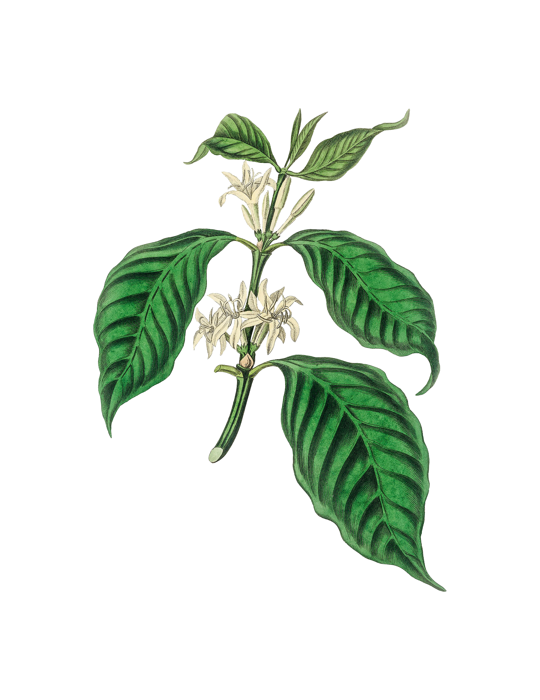
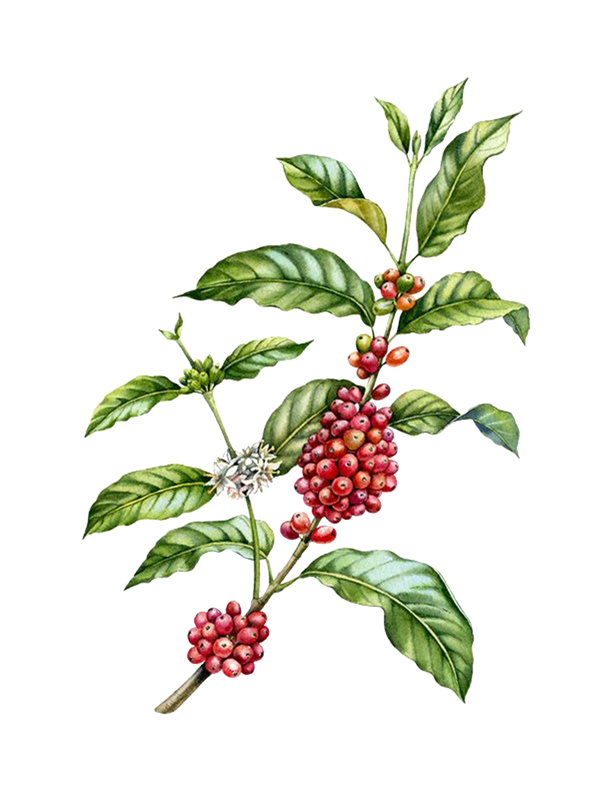

Arabica
Arabica is the most common (and certainly most
heavily marketed) type of coffee in North America.
That’s because it actually has a sweeter, more
delicate flavor and the coffee itself tends to
be less acidic. Arabica beans are farmed in areas
with high elevations above sea level, particularly
those where rain is plentiful.

Liberica
Liberica coffee beans are a rare treat. They’re
grown in very specific climates with production being
far too scarce for farmers to scale their
operations to truly satisfy a global marketplace. The
beans are said to have a unique aroma, consisting of
floral and fruity notes, with a full body
that possesses a smoky taste

Robusta
Robusta coffee is the second most produced coffee
in the world, making up around 40% of the coffee
production. Most of the Robusta beans are grown in
Vietnam, but there are also plenty of fields in Africa,
where these beans originally come from.Robusta has
a harsh, bitter flavor due to its high concentration of
caffeine and chlorogenic acid and lower sugar content

Excelsa
Excelsa grows mostly in Southeast Asia and accounts
for a mere 7% of the world’s coffee circulation. It is
largely used in blends in order to give the coffee an extra
boost of flavor and complexity, better affecting the
middle and back palate. Excelsa is said to possess a tart
and fruity body—which are flavors reminiscent of a
light roast—that also somehow has dark, roasty notes.